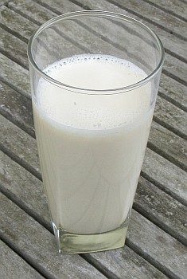

Au temps pâssé les jannes gens d'la Ville soulaient atchilyi l'Êté au c'menchment du mais d'Mai - l'preunmié Dînmanche - en griyant du milk-é-pan'tch. Habilyis en blianc, i' lus en allaient ès côtis auve du lait trait tout frais d'la vaque, d's oeux prîns du poulaillyi, du chucre et du rhonme et y b'vaient lus milk-é-pan'tch. D'aut' bord dans l'Île ch'tait eune couôteunme d'la Saint Jean.
Pouor graie du milk-é-pan'tch au jour d'aniet:
îngrédgeins:
Viyiz étout: